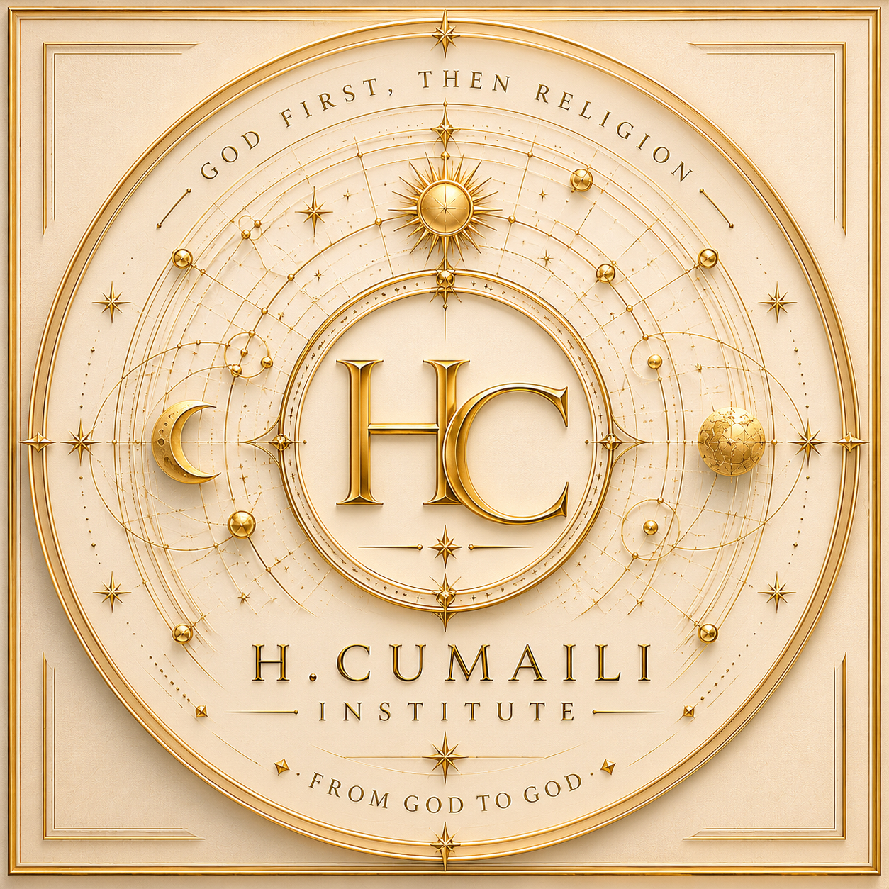

Biblical Hermeneutics
Semantic inquiry, textual interpretation, scriptural continuity, and meaning across traditions.
God First, Then Religion

Independent Research Institute in Biblical Hermeneutics, Comparative Abrahamic Studies, Torah, Gospel, and Quran Studies
From God to God
H. Cumaili Institute is dedicated to the study of divine revelation through biblical hermeneutics, comparative Abrahamic inquiry, and the continuity of prophetic meaning across scripture.
God First, Then Religion
H. Cumaili Institute advances the study of scripture, revelation, semantic meaning, and prophetic continuity through interdisciplinary Abrahamic inquiry.
Semantic inquiry, textual interpretation, scriptural continuity, and meaning across traditions.
Torah, Gospel, Quran, prophetic transmission, and intertextual continuity.
Divine reality, revelation, meaning, and theological language.
Manuscripts, transmission, semantic variance, and prophetic continuity.
Explore curated research libraries dedicated to scripture, revelation, prophetic continuity, and comparative Abrahamic inquiry.
A unified archive of research, manuscripts, comparative studies, and institutional scholarship.
Torah, Hebrew tradition, prophetic writings, and textual foundations.
Gospel traditions, early Christianity, manuscript history, and theological continuity.
Quranic studies, prophetic transmission, hadith traditions, and revelation studies.
Cross-scriptural comparison, semantic continuity, prophetic themes, and Abrahamic inquiry.
A Research Philosophy Rooted in Revelation, Meaning, and Intellectual Integrity
This institute emerges from three words that shaped an entire intellectual pursuit:
Not merely a phrase, but a philosophical orientation toward revelation, meaning, creation, existence, and the search for divine reality through historical testimony.
The purpose of this inquiry is not first to defend a tradition, preserve inherited assumptions, or begin with predetermined conclusions, but to move toward the originating source through the textual and historical continuity of the Abrahamic scriptures.
Accordingly, this project approaches the Torah, the Gospel, and the Quran through a disciplined commitment to scholarly integrity, comparative inquiry, and textual fidelity.
The texts are examined as they have reached us. Where tensions emerge, they are not ignored. Where difficulties appear, they are not concealed. Where continuity exists, it is explored.
No external framework is imposed upon the material before examination. The inquiry begins with the text.
What does revelation disclose about God?
The aim is neither polemic nor preference, but disciplined inquiry undertaken with academic seriousness, intellectual honesty, and responsibility before truth.
For if there is one place where bias must end, it is before the reality of God.
Before doctrine.
Before division.
Before conclusion.